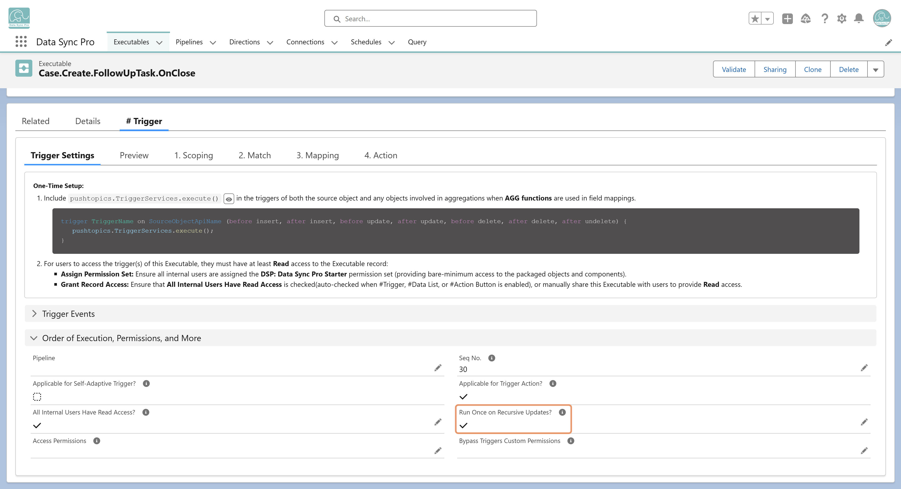

To prevent repeated execution during recursive updates, enable the Run Once on Recursive Updates. When enabled, DSP ensures that the trigger logic runs only once per triggering record per trigger event (Before Update or After Update)—even if the record is updated again due to other automations within the same transaction.
This helps avoid duplicate execution, infinite loops, and unnecessary overhead in complex automation scenarios.
